I designed a website for an app I created called "tigerride," which helps students find people to share rides to and from airports. At the beginning and end of every break, numerous students at my school look for buddies to share ubers/lyfts with to nearby airports, because the costs can get pretty expensive. This website, which I developed with a team of three fellow students for a current course I am taking called COS333: Advanced Programming Techniques, matches people who are looking to go to the same destination around the same time frame. I was mostly in charge of the front-end development, so here is a glimpse at some of the pages I have created.
Our splash page. I added some javascript that spells out some of the possible origin/destination/date/time combinations. I wanted to give visitors an idea of what tigerride was all about, without having to explicitly state "a ridesharing app for Princeton students."
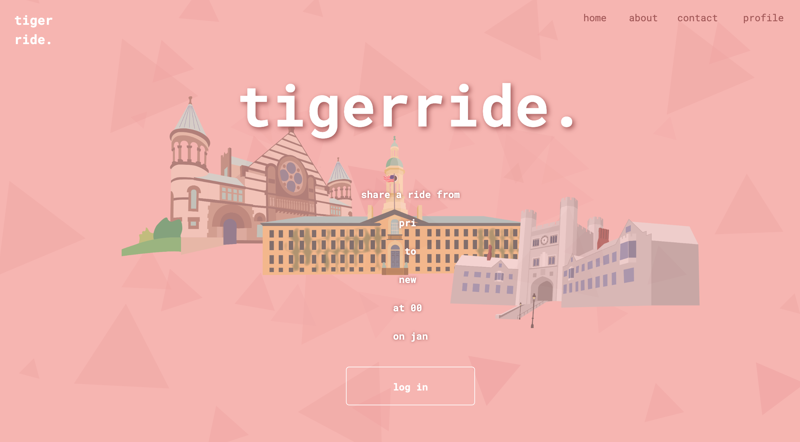
Since we wanted to make this to make a safe and reliable service for fellow students, we incorporated a university-wide Central Authentication Service. When the "login" button is pressed, the user is taken to the following page where they can log in with their university credentials.
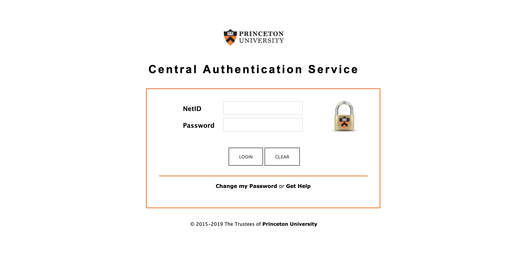
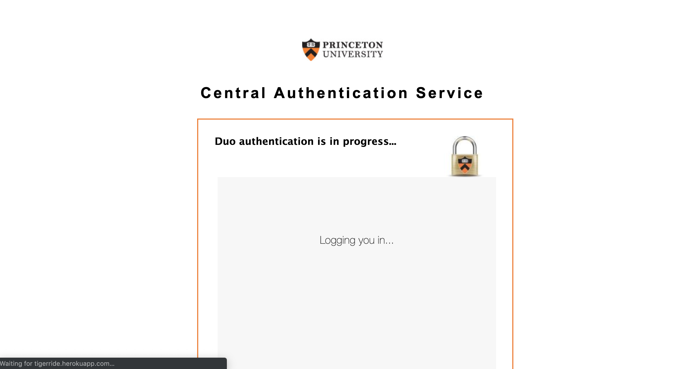
Once you log in, you are greeted with a simple "welcome back" page. You are given two options: plan a new trip, or see your current/past rides.
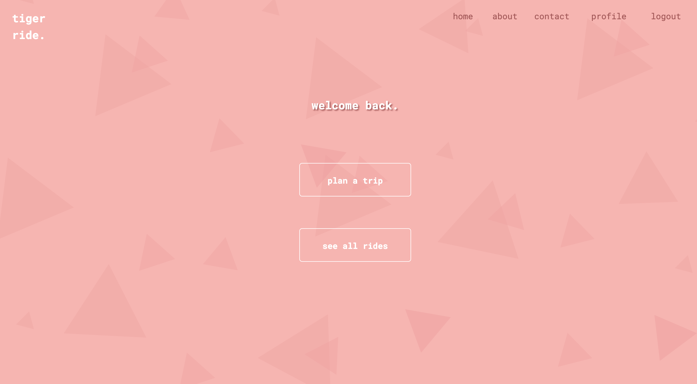
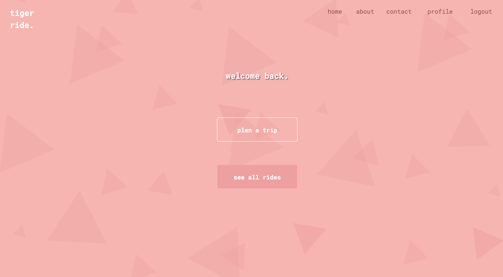
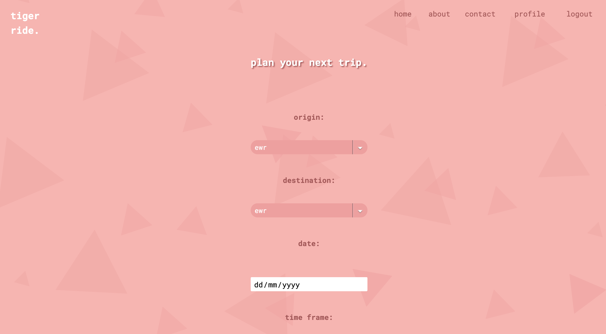
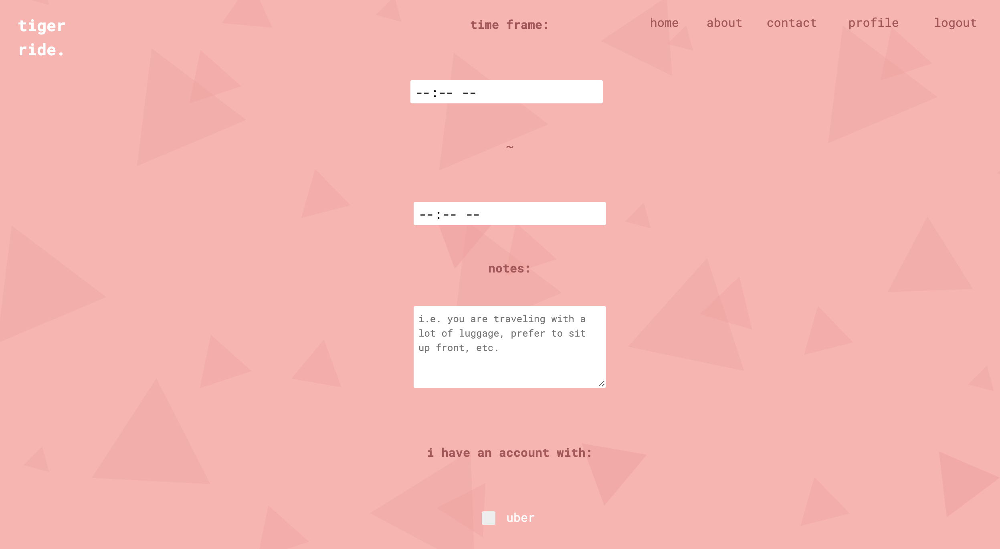
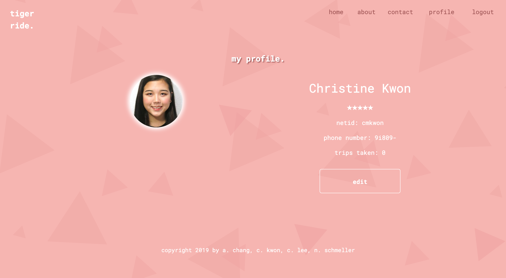
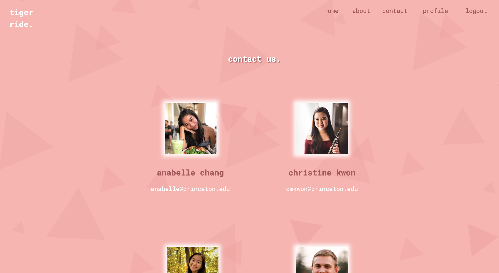
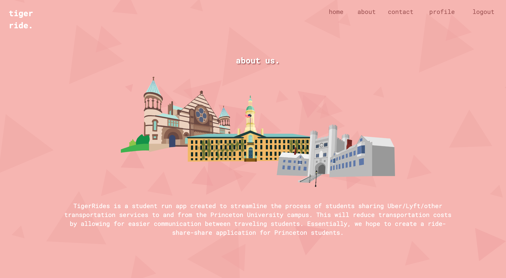
Of course, she is compatible with our handheld friends.
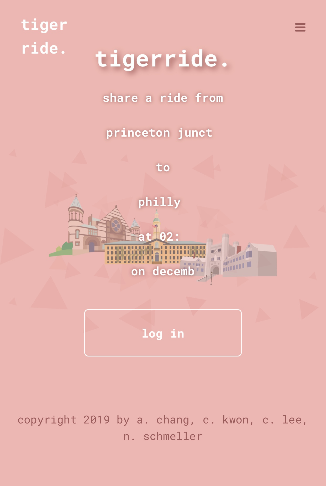
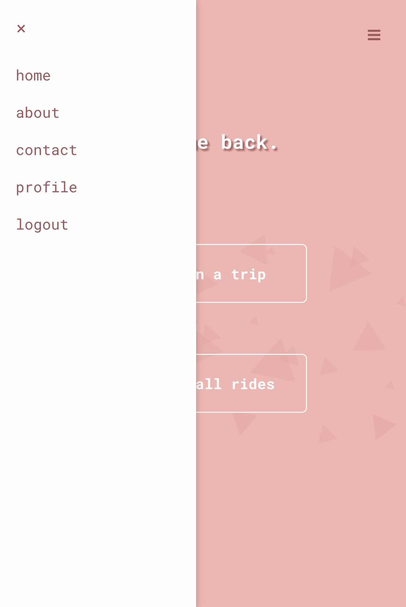
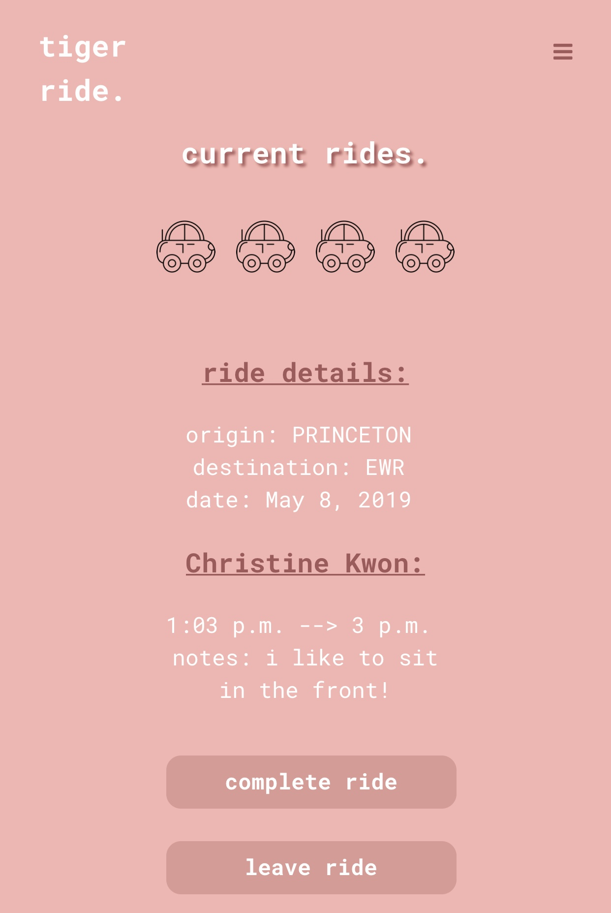